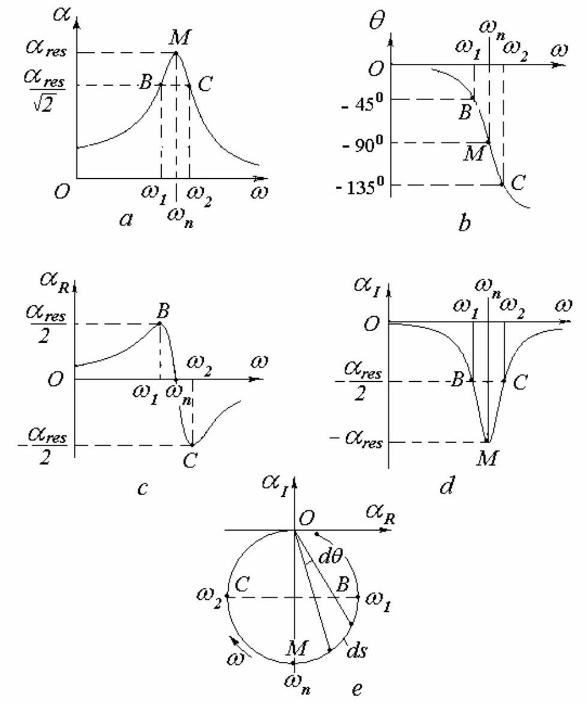
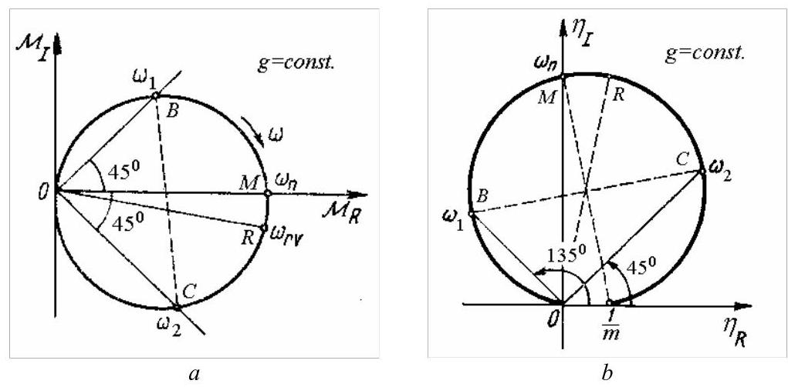
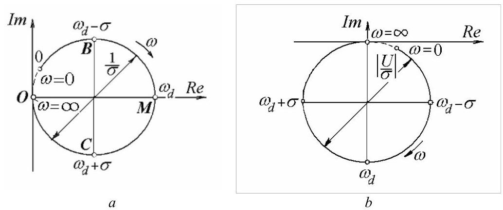
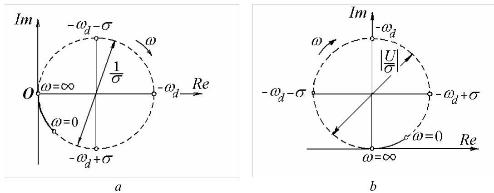
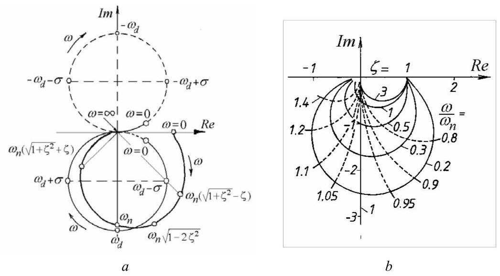

2.4.7 频率响应函数
根据响应是位移、速度还是加速度，可定义多种频率响应函数(FRFs)，其为响应/激励或激励/响应的复数比值。以下定义几乎被普遍接受并已标准化:
加速度/力\(=\) 加速度导纳(或惯量)，
力/位移\(=\) 动刚度，
力/速度\(=\) 机械阻抗，
力/加速度\(=\) 视在质量。

图2.34
由于所有相关参数均具有谐波特性，这些函数本质上包含关于振动系统的相同信息，并且可以在它们之间建立简单的关系。
通常使用三种不同类型的图:
a) FRF(频率响应函数)幅值-频率的Bodé图(Bodé diagram)以及FRF相位角-频率的Bodé图；
b) FRF实部-频率图与FRF虚部-频率图；
c) FRF实部对虚部的Nyquist图(Nyquist diagram)。
对于具有结构阻尼的系统，图2.34给出了在固定结构阻尼因子下导纳(receptance)\(\bar{\alpha } = \bar{X}/{F}_{0}\)的曲线。共振发生在点\(M\)，而半功率点标记为\(B\)和\(C\)。
Nyquist图(图2.34, e)是向量\(\bar{\alpha }\)端点在复平面上的轨迹，呈圆形。它在单一图中同时包含幅值和相位角信息。在共振附近，频率刻度被最大程度地放大，因此半圆即表示半功率点之间的响应，与阻尼水平无关。降低阻尼的效果是增大圆的直径并进一步扩展频率刻度。
共振由\(\alpha\)(图2.34, a)和\(\left| {\alpha }_{I}\right|\)(图\({2.34}, d)\))中的极大值，以及\(\theta\)(图2.34, b)和\({\alpha }_{R}\)(图2.34,\(c\))中的拐点(最大斜率或对\({\omega }^{2}\)的最大导数)指示。\(\left| {\alpha }_{I}\right|\)的峰值比\(\alpha\)更尖锐。在共振时，\(\theta = - {90}^{0}\)且\({\alpha }_{R} = 0\)。在Nyquist图(图2.34,\(e\))中，共振发生在圆与虚轴相交处，此时弧长随频率的变化率达到最大。这一结论基于以下观察:
在共振时，该导数达到最大值。如果系统受谐波力激励，并以等频率增量\({\Delta \omega }\)逐点绘制导纳，则相邻两点间的弧长\({\Delta s}\)在共振处最大。该特性是Kennedy和Pancu提出的固有频率定位方法的基础。
结构阻尼因子可由下式计算:
其中\({\omega }_{1}\)和\({\omega }_{2}\)为\({\alpha }_{R}\left( \omega \right)\)的峰值频率，或Nyquist图中与\({OM}\)垂直的直径\({BC}\)两端对应的频率。
刚度可由共振处的值\({\alpha }_{\text{res }}\)计算:
因为在复平面中，速度比位移超前\({90}^{0}\)相位，加速度又比速度超前\({90}^{0}\)相位，所以导纳(mobility)和加速度导纳(accelerance)的Nyquist图相对于导纳(receptance)的极坐标图分别逆时针旋转\({90}^{0}\)和\({180}^{0}\)。
导纳(mobility)\(\bar{M} = \mathrm{i}\omega \bar{X}/{F}_{0} = {M}_{R} + \mathrm{i}{M}_{I}\)的Nyquist图(非圆形)如图2.35,\(a\)所示，其方程如下:

图2.35
加速度导纳(accelerance)的奈奎斯特图(Nyquist plot)如图\({2.35}, b\)所示，其轨迹为一个圆，方程为
半功率点与最大响应幅值点在两图中均有标示。
2.4.8 粘性阻尼的位移导纳极坐标图
位移导纳(receptance)可表示为复位移幅值\(\bar{X}\)与力幅值\({F}_{0}\)之比。若采用频率响应函数(frequency response functions)的通用记号\(H\left( {\mathrm{i}\omega }\right)\)，而非\(\bar{\alpha }\)，则对于粘性阻尼可得
其奈奎斯特图并非圆形，这对系统参数辨识构成缺陷。然而，下文将证明该曲线可分解为两个圆。
方程(2.86)可写成如下形式
其中\({s}_{1,2} = - \sigma \pm \mathrm{i}{\omega }_{d}\) (2.48)为特征方程(2.39)的根。
方程(2.87)可用部分分式表示
将方程(2.88)两边同乘\(\left( {\mathrm{i}\omega - {s}_{1}}\right)\)，并在\(\mathrm{i}\omega = {s}_{1}\)处求值，得到
于是
同理
因此，通过从\({C}_{1}\)和\({C}_{2}\)中提取常数\(\frac{1}{2\mathrm{i}}\)，方程(2.88)可写成标准形式
其中星号表示复共轭。
在此情形下，留数为纯实数。
对于多自由度系统，留数为复共轭对。
方程(2.89)可写成
其中
分析由解析表达式(2.91)得到的奈奎斯特图(Nyquist plot)是有益的。

图2.36
为了绘制求和中第一项的图像
考虑绘制
在复平面上，表达式(2.94)表示一个圆(图2.36, a)，其圆心为\(\left( {1/{2\sigma },0}\right)\)，直径为\(1/\sigma\)。在振幅最大的点\(M\)，即圆与实轴的交点处，频率为\({\omega }_{d}\)，即阻尼固有频率(damped natural frequency)。衰减率(decay rate)\(\sigma\)等于从\(M\)到点\(B\)和\(C\)的频率间隔，这些点的响应向量与\(M\)的响应向量成\(\pm {45}^{0}\)角。对于负频率，圆用虚线绘制。
接下来考虑虚数(imaginary number)\(U\)在表达式(2.93)分子中的作用。将前一幅图乘以该虚数，会使图形顺时针旋转\({90}^{ \circ }\)，并按\(1/{2m}{\omega }_{d}\)的比例放大或缩小(图2.36, b)。所得圆称为以正频率为主的圆(circle with predominantly positive frequencies)。该圆的圆心位于\(\left( {0, - \left| {U/{2\sigma }}\right| }\right)\)，直径为\(\left| \frac{U}{\sigma }\right| = \frac{1}{2k}\frac{1}{\zeta \sqrt{1 - {\zeta }^{2}}}\)。虚线部分对应负频率。

图2.37
现在考虑求和中的第二项
如图2.37所示，\(a\)。
表达式(2.95)同样表示一个圆(图2.37, b)，称为以负频率为主的圆。该圆与图2.36所示的圆直径相同，\(b\)但相对于实轴逆时针旋转了\({90}^{ \circ }\)。对应于正频率的圆弧仅占圆的一小部分，其余对应负频率的部分用虚线绘制。
将图2.36\(b\)与图2.37\(b\)的曲线合并，得到图2.38\(a\)的奈奎斯特图(Nyquist plot)，它已不再是圆形。图2.38\(b\)给出了多个这样的图，对应不同的\(\omega /{\omega }_{n}\)和\(\zeta\)值。

图2.38
在阻尼固有频率处，频响函数(FRF)的值为
这可以近似为
因为式(2.97)右侧第二项在\({\omega }_{d}\)趋于无穷大时趋近于零。
因此，许多单自由度模型可简化为
Matlab Demo
下面提供一段代码，绘制了频率响应函数（FRF）绘制位移导纳的奈奎斯特图，将奈奎斯特图分解为两个理论圆的叠加，对比实际物理响应（正频率部分）与完整频率范围的理论特性，揭示其数学构成原理。
%% 1. 初始化和参数定义
clear;
clc;
close all;
% 定义系统物理参数
m = 1.0; % 质量 (kg)
k = 10000; % 刚度 (N/m)
zeta = 0.2; % 阻尼比 (无量纲)
omega_n = sqrt(k/m); % 无阻尼固有频率 (rad/s)
c = 2 * zeta * sqrt(m*k); % 粘性阻尼系数 (Ns/m)
omega_d = omega_n * sqrt(1-zeta^2); % 有阻尼固有频率 (rad/s)
% 定义物理系统的频率范围 (ω >= 0)
freq_hz = linspace(0, (omega_n / (2*pi)) * 2, 2000);
omega = 2 * pi * freq_hz; % 角频率 (rad/s)
%% 2. 计算物理系统的频率响应函数 (FRF)
H_omega = 1 ./ (k - m * omega.^2 + 1i * omega * c);
%% 3. 绘制标准的奈奎斯特图
figure('Name', 'Nyquist Plot of Displacement Receptance');
% 计算对称的坐标轴范围
max_abs_val = max(abs([real(H_omega), imag(H_omega)]));
axis_limit = max_abs_val * 1.1;
xlim([-axis_limit, axis_limit]);
ylim([-axis_limit, axis_limit]);
hold on;
% 绘制奈奎斯特曲线
plot(real(H_omega), imag(H_omega), 'b-', 'LineWidth', 2);
% 标记关键点
plot(real(H_omega(1)), imag(H_omega(1)), 'ko', 'MarkerFaceColor', 'g', 'MarkerSize', 8);
text(real(H_omega(1)) * 1.05, imag(H_omega(1)) - 0.05*axis_limit, '\omega = 0', 'Color', 'g', 'FontSize', 12);
[~, idx_wn] = min(abs(omega - omega_n));
plot(real(H_omega(idx_wn)), imag(H_omega(idx_wn)), 'rs', 'MarkerFaceColor', 'r', 'MarkerSize', 8);
text(real(H_omega(idx_wn)), imag(H_omega(idx_wn)) + 0.05*axis_limit, ' \omega = \omega_n', 'Color', 'r', 'FontSize', 12);
[~, idx_wd] = min(abs(omega - omega_d));
plot(real(H_omega(idx_wd)), imag(H_omega(idx_wd)), 'md', 'MarkerFaceColor', 'm', 'MarkerSize', 8);
text(real(H_omega(idx_wd)), imag(H_omega(idx_wd)) - 0.05*axis_limit, ' \omega = \omega_d', 'Color', 'm', 'FontSize', 12);
% 格式化图形
grid on;
axis equal;
title(['粘性阻尼位移导纳的奈奎斯特图 (\zeta = ', num2str(zeta), ')'], 'FontSize', 14);
xlabel('Re(H(\omega)) - 实部', 'FontSize', 12);
ylabel('Im(H(\omega)) - 虚部', 'FontSize', 12);
legend('位移导纳 H(\omega) [\omega \geq 0]', 'Location', 'northwest');
ax = gca;
ax.XAxisLocation = 'origin';
ax.YAxisLocation = 'origin';
hold off;
%% 4. 演示奈奎斯特图由两个圆合成
% 计算分解项的常数
sigma = zeta * omega_n;
U = -1i / (2 * m * omega_d);
U_star = conj(U);
omega_sym = linspace(-4*omega_n, 4*omega_n, 4000); % 对称频率向量
% 使用对称频率范围计算H1和H2以绘制完整的圆
H1_full_circle = U ./ (sigma + 1i * (omega_sym - omega_d));
H2_full_circle = U_star ./ (sigma + 1i * (omega_sym + omega_d));
% --- 绘制分解图 ---
figure('Name', 'Decomposition of the Nyquist Plot');
% 基于所有曲线（包括完整的理论圆）计算对称坐标轴
all_data = [real(H_omega), imag(H_omega), real(H1_full_circle), imag(H1_full_circle), real(H2_full_circle), imag(H2_full_circle)];
max_abs_val_all = max(abs(all_data));
axis_limit_all = max_abs_val_all * 1.1;
xlim([-axis_limit_all, axis_limit_all]);
ylim([-axis_limit_all, axis_limit_all]);
hold on;
% 1. 绘制物理系统的FRF (ω >= 0)，这才是实际测量的奈奎斯特图
plot(real(H_omega), imag(H_omega), 'k--', 'LineWidth', 3, 'DisplayName', '总导纳 H(\omega) [物理响应, \omega \geq 0]');
% 2. 绘制完整的理论圆 H1 ("以正频率为主的圆")
plot(real(H1_full_circle), imag(H1_full_circle), 'r-', 'LineWidth', 1.5, 'DisplayName', '理论圆 H1');
% 3. 绘制完整的理论圆 H2 ("以负频率为主的圆")
plot(real(H2_full_circle), imag(H2_full_circle), 'g-', 'LineWidth', 1.5, 'DisplayName', '理论圆 H2');
hold off;
% 格式化图形
grid on;
axis equal;
title('奈奎斯特图分解为两个圆', 'FontSize', 14);
xlabel('实部', 'FontSize', 12);
ylabel('虚部', 'FontSize', 12);
legend('show', 'Location', 'northeast');
ax = gca;
ax.XAxisLocation = 'origin';
ax.YAxisLocation = 'origin';